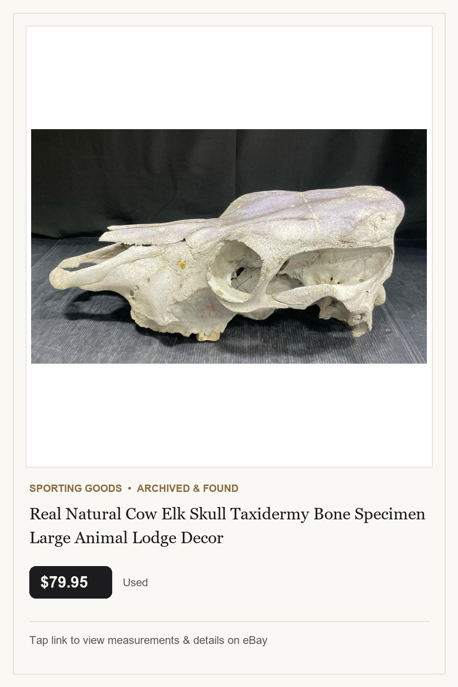
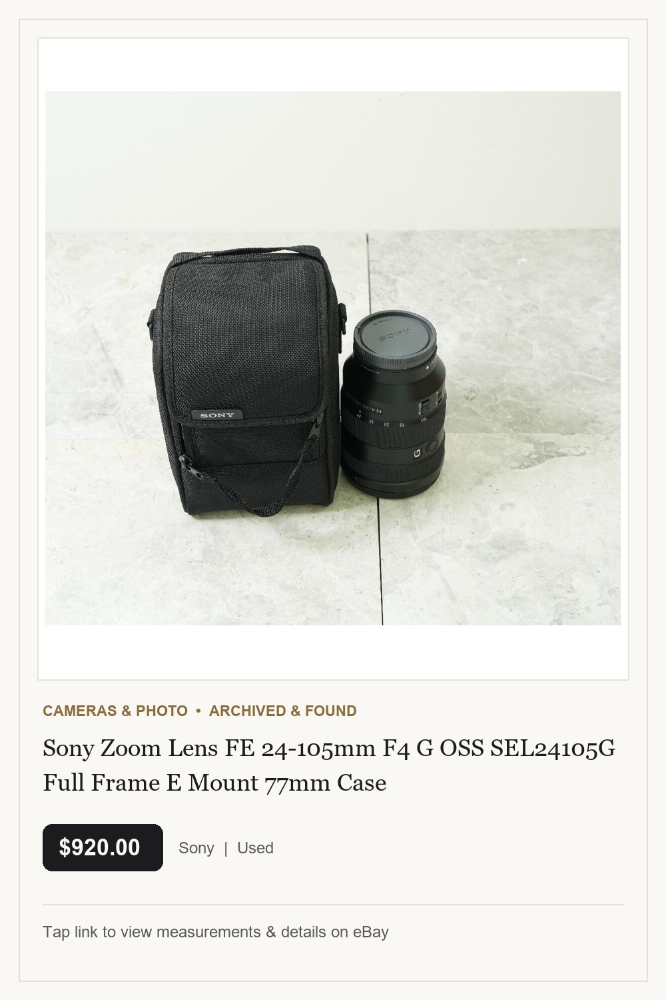

In Stock • Verified eBay Archive
In Stock • Verified eBay ArchiveMSI NVIDIA GeForce GTX 1050 Ti Gaming X 4G Graphics Card 4GB GDDR5 PCIe MS-V335
$104.98 USD
- Brand: MSI
- Model: MSI GeForce GTX 1050 Ti GAMING X 4G (MS-V335 Ver 1.2)
- Condition: Used
- Size: 9.02 in
- Origin: China
MSI NVIDIA GeForce GTX 1050 Ti Gaming X 4G Graphics Card 4GB GDDR5 PCIe MS-V335. Brand: MSI • Model: MSI GeForce GTX 1050 Ti GAMING X 4G (MS-V335 Ver 1.2) • Condition: Used • Size: 9.02 in • $104.98. Available via archivedandfound on eBay. #VintageCameras #ArchiveFinds
Shop This Piece on eBay → Browse Computer Components & Parts
Related Curated Pieces

$79.95Real Natural Cow Elk Skull Taxidermy Bone Specimen Large Animal L

$110.00All-Purpose English Riding Saddle Seat Pad Cowhide Leather Brown

$1,928.96Sony FE 70-200mm F2.8 GM OSS SEL70200GM E-Mount Zoom Lens White S

$920.00Sony Zoom Lens FE 24-105mm F4 G OSS SEL24105G Full Frame E Mount